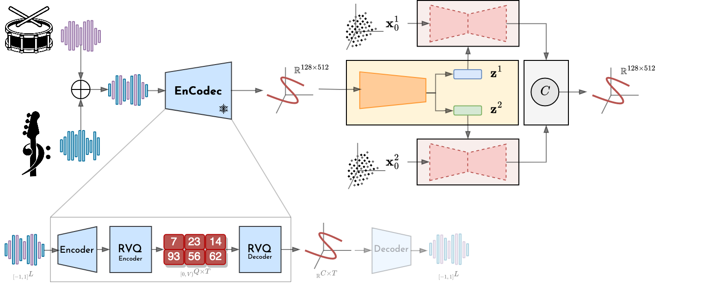

This website is still under construction and is linked to our paper submission to the ICML 2024 Conference.
In this paper, we target the extrapolation and out-of-distribution generation problem in generative models by introducing a generic compositional inductive bias. Leveraging state-of-the-art generative models in an encoder-decoder scheme, our approach focuses on compositional representation learning without any form of supervision. We perform experiments on image and audio data, demonstrating the adaptability of our model to different modalities and representations. Our Diffusion-based Representation Learning for Modality-Agnostic Compositionality (DIRAC), builds upon diffusion models and shows promising results in separating meaningful entities in both images and music, serving as a powerful baseline for future investigations around compositional generation and representation learning.
As depicted in the figure below, a sample is mapped to a set of latent variables through an encoder. These variables are used to condition a diffusion model that is responsible for generating a portion of the data. The generations are then fed to a composition operator that reconstructs the input.
For audio experiments, we apply the aforementioned approach in the latent space of a pre-trained Variational Autoencoder, specifically the EnCodec model.

In the following table, we report the reconstructions obtained through our model trained with 2 latent variables on the mixuture of drums and bass stems of the MUSDB dataset. This model (15.1M parameters U-Net + 400K parameters encoder) has been trained for 1000 epochs using the mean composition operator. Please refer to the paper for more details. While also providing the audio encoded in each latent variable, we emphasize that this model is not built with the intention of performing unsupervised source separation in the latent space. Our goal, instead, is to learn interpretable and composable representations and, in this case, these representations seem to align with the drums and bass stems that compose the original audio.
| Sample | Original Audio | Reconstructed Audio | Latent 1 | Latent 2 |
|---|---|---|---|---|
| 1 | ||||
| 2 | ||||
| 3 | ||||
| 4 | ||||
| 5 | ||||
| 6 |